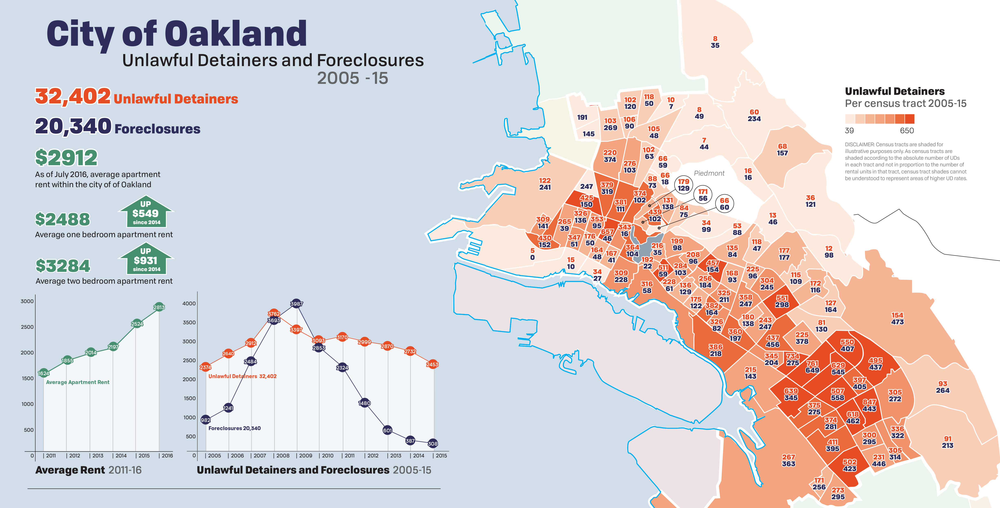
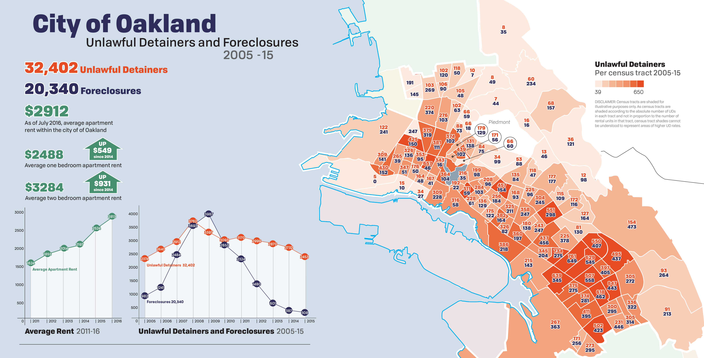

REDLINING
Redlining was a 1930’s-era federal practice of delineating city areas by their return on investment, which often would result in banks refusing loans and mortgages to residents of ‘at-risk’ neighborhoods. To create these maps, the Home Owner’s Loan Corporation (HOLC), a government-sponsored corporation created as a result of the New Deal, surveyed 239 cities and graded neighborhoods based on racial and ethnic buildup and average household income. Due to racial prejudices during the 1930’s, predominantly white neighborhoods were generally given higher grades while neighborhoods with more racial diversity received lower grades. Once these maps were created, the Federal Housing Administration (FHA), the organization which took over HOLC, used the maps in order to determine who could apply for and receive mortgages or loans. As substantially more loans and investment were poured into the higher grade areas than the lower graded areas, a wealth disparity arose and perpetuated itself between neighborhoods.

EFFECTS OF REDLINING
The term “redlining” refers to the red, D-grade, areas that marked certain neighborhoods as “unfit for investment”. On the other hand, green sectors (A grade) indicated new areas ideal for investment, blue sectors (B grade) were settled areas of adequate grade, and yellow sectors (C grade) meant some degree of undesirability. Though redlining is no longer a modern practice, its effects are still evident in society today. Today, redlined areas generally house more residents of color and have lower annual incomes than primarily white, high-income blue and green areas.
The areas that were marked as red zones in the 1930’s still feel the effects today. They remain areas mostly populated by lower-class individuals and block upward social and economic mobility. While demographics have shifted over years, poorer classes have been indirectly forced, due to the lack of social mobility caused by redlining practices, to stay in these areas. Since these lower classes are primarily made up of minorities, these zones and neighborhoods have become segregated not only by economic and social class, but by race as well.
The areas that were marked as red zones in the 1930’s still feel the effects today. They remain areas mostly populated by lower-class individuals and block upward social and economic mobility. While demographics have shifted over years, poorer classes have been indirectly forced, due to the lack of social mobility caused by redlining practices, to stay in these areas. Since these lower classes are primarily made up of minorities, these zones and neighborhoods have become segregated not only by economic and social class, but by race as well.
REDLINING AND RACE
One of the biggest effects of redlining was the unequal investment of capital into various communities throughout San Francisco. The redlining maps made it clear to local banks and financial institutions throughout the city where their money would be best spent.
In addition to being the most desirable areas to live, green zones were seen as prime locations for investment due to their high white populations, increasing the values of local residents’ homes and hence their wealth. On the other hand, due to the racial buildup of relatively low income residents, redlined areas were seen as undesirable for investment, preventing rises in property values. This disinvestment led to poverty and a lack of social mobility, which made life tougher for residents in redlined areas. Consequently, a large divide between racial communities, both financially and socially, was established. Furthermore, disinvestment in redlined areas was a self-perpetuating phenomenon in which disinvested communities continued to lack investment for many years for the same reason they never got it.
In modern times, redlines areas have been receiving large amounts of private funding, which has improved these segregated communities. However, in many cases, the new influx of capital and wealthy immigrants has forced out the established residents in these communities and gentrified areas with a higher cost of living. Much of this displacement is caused by large amounts of evictions around the city; most notably conducted through the Ellis Act. This legislation allows owners to evict their tenants in order to close or retire a building, forcing people out of rent-controlled units to make way for wealthier tenants and the construction of higher-priced luxury apartments. As a result, the cost of living has increased in these areas, making life unaffordable for its largely minority original residents and forcing them to seek more affordable areas outside of San Francisco.
In addition to being the most desirable areas to live, green zones were seen as prime locations for investment due to their high white populations, increasing the values of local residents’ homes and hence their wealth. On the other hand, due to the racial buildup of relatively low income residents, redlined areas were seen as undesirable for investment, preventing rises in property values. This disinvestment led to poverty and a lack of social mobility, which made life tougher for residents in redlined areas. Consequently, a large divide between racial communities, both financially and socially, was established. Furthermore, disinvestment in redlined areas was a self-perpetuating phenomenon in which disinvested communities continued to lack investment for many years for the same reason they never got it.
In modern times, redlines areas have been receiving large amounts of private funding, which has improved these segregated communities. However, in many cases, the new influx of capital and wealthy immigrants has forced out the established residents in these communities and gentrified areas with a higher cost of living. Much of this displacement is caused by large amounts of evictions around the city; most notably conducted through the Ellis Act. This legislation allows owners to evict their tenants in order to close or retire a building, forcing people out of rent-controlled units to make way for wealthier tenants and the construction of higher-priced luxury apartments. As a result, the cost of living has increased in these areas, making life unaffordable for its largely minority original residents and forcing them to seek more affordable areas outside of San Francisco.
REDLINING AND FORECLOSURES
Because redlined areas were normally last to receive investment decades after the boundaries were set, the demand for property in these areas was lower than that in other areas. In recent decades, investors such as local banks and financial institutions have realized the potential for “flipping” units in redlined areas to create lucrative profits. They have driven large amounts of investment to these areas, evicting previous residents and replacing downtrodden buildings with luxury condos. Because property values were low due to perpetual disinvestment, these investments reaped high profits. However, in order to “flip” units, it was first necessary to remove the poor and largely minority residents in residing within. Foreclosures on high-interest loans to residents of redlined areas and no-fault evictions via recent laws like the Ellis Act provided pathways for landlords and investors to “reset” redlined areas in order for redevelopment. Hence, foreclosures are more common in redlined areas, where there is greater potential for flipping. On the other hand, the economic stability of white, middle-class residents and the low flipping potential of these areas have prevented rampant foreclosures or evictions in green or blue areas. As a result, in recent years, redlined areas have been much more affected by waves of foreclosures, evictions, with concomitant redevelopment and gentrification.

REDLINING THEN,
GENTRIFICATION NOW
GENTRIFICATION NOW
Because minorities are most at risk of foreclosure, the rise in foreclosures and evictions has led to the displacement of minorities and has driven gentrification. High-cost subprime loans were concentrated in neighborhoods of color, while low-cost prime loans were more likely to be given to non-minority neighborhoods. As a result, unsustainable loans lead to foreclosure, loan failure, and re-redlining. Research from the Federal Reserve Bank of San Francisco has confirmed that “African Americans and Latinos in California had less access to federally regulated bank lenders and greater access to mortgage brokers and independent mortgage companies”. Minorities such as African American and Latinos are forced to turn to high-interest lending plans in order to purchase properties; high-cost loans which targeted minorities contributed to two-third of the foreclosures in California.
Overall, the process of foreclosure separates the wealthy from the working class. Foreclosures have prevented the value of properties from falling and has discouraged minorities and the poor from possessing property. Areas with lower costs are redeveloped into luxurious entertainments, apartments and offices. As gentrification is introduced to accommodate the upper class, re-redlining impacts areas where residents can barely resist foreclosures. At the same time, local banks’ massive mortgage and loan denials discriminate people of color who want to “revitalize” their community in the neighborhood.
Ultimately, redlining has driven both racial stratification and foreclosures, two of the major features of modern gentrification. Contemporary reinvestment in poor areas has not resulted in a lessening of these ails; rather, reinvestment has further increased the strain upon poorer residents and minorities, often leaving them without a place to live. First locked down by redlining and now displaced by gentrification, poorer residents of San Francisco still suffer at the hand of a spectre of the past.
Overall, the process of foreclosure separates the wealthy from the working class. Foreclosures have prevented the value of properties from falling and has discouraged minorities and the poor from possessing property. Areas with lower costs are redeveloped into luxurious entertainments, apartments and offices. As gentrification is introduced to accommodate the upper class, re-redlining impacts areas where residents can barely resist foreclosures. At the same time, local banks’ massive mortgage and loan denials discriminate people of color who want to “revitalize” their community in the neighborhood.
Ultimately, redlining has driven both racial stratification and foreclosures, two of the major features of modern gentrification. Contemporary reinvestment in poor areas has not resulted in a lessening of these ails; rather, reinvestment has further increased the strain upon poorer residents and minorities, often leaving them without a place to live. First locked down by redlining and now displaced by gentrification, poorer residents of San Francisco still suffer at the hand of a spectre of the past.
San Francisco Evictions and Foreclosures, 2015, according to Eviction Defense Collaborative Data

Oakland Foreclosures and Unlawful Detainer Evictions, 2005-2015, as part of our Counterpoints Report

Resources
Oakland Foreclosures and Unlawful Detainer Evictions, 2005-2015, as part of our Counterpoints Report

Resources
Robert K. Nelson, LaDale Winling, Richard Marciano, Nathan Connolly, et al., “Mapping Inequality,” American Panorama, ed. Robert K. Nelson and Edward L. Ayers, accessed November 30, 2016, https://dsl.richmond.edu/panorama/redlining/#loc=4/36.71/-96.93&opacity=1.
Dawn Phillips, Luis Flores Jr., and Jamila Henderson. “Development Without Displacement: Resisting Gentrification in the Bay Area,” Causa Justa: Just Cause, accessed November 30, 2016, http://cjjc.org/wp-content/uploads/2015/11/development-without-displacement.pdf.
"From Foreclosure to Re-Redlining." Foreclosure to Re-redlining. California Reinvestment Coalition, n.d. Web. 29 Nov. 2016.
Brinklow, Adam. "Where San Francisco's Last 8,859 Evictions Happened, Ranked By Neighborhood." Curbed SF. N.p., 2016. Web. 29 Nov. 2016.
Brinklow offers quick insight on gentrification in San Francisco and data on eviction rates in San Francisco neighborhoods in recent years. This data was used in the infographic displayed on the website.
Sabatini, Joshua. "San Francisco Evictions Continue to Rise Each Year since 2010." The San Francisco Examiner. N.p., 2016. Web. 29 Nov. 2016.
Sabatini reports statistics from San Francisco’s eviction reports over the years and emphasizes the recent upward trend of more evictions in the city. This data was used in the infographic displayed on the website.
Dawn Phillips, Luis Flores Jr., and Jamila Henderson. “Development Without Displacement: Resisting Gentrification in the Bay Area,” Causa Justa: Just Cause, accessed November 30, 2016, http://cjjc.org/wp-content/uploads/2015/11/development-without-displacement.pdf.
"From Foreclosure to Re-Redlining." Foreclosure to Re-redlining. California Reinvestment Coalition, n.d. Web. 29 Nov. 2016.
Brinklow, Adam. "Where San Francisco's Last 8,859 Evictions Happened, Ranked By Neighborhood." Curbed SF. N.p., 2016. Web. 29 Nov. 2016.
Brinklow offers quick insight on gentrification in San Francisco and data on eviction rates in San Francisco neighborhoods in recent years. This data was used in the infographic displayed on the website.
Sabatini, Joshua. "San Francisco Evictions Continue to Rise Each Year since 2010." The San Francisco Examiner. N.p., 2016. Web. 29 Nov. 2016.
Sabatini reports statistics from San Francisco’s eviction reports over the years and emphasizes the recent upward trend of more evictions in the city. This data was used in the infographic displayed on the website.